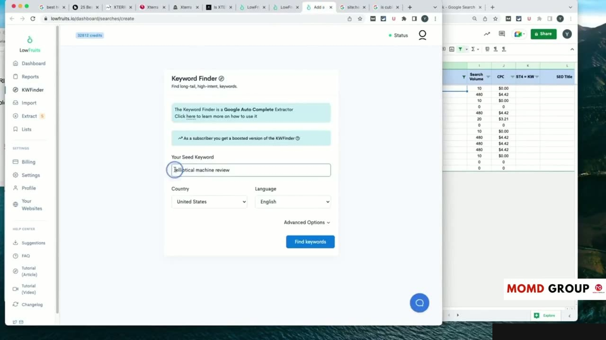
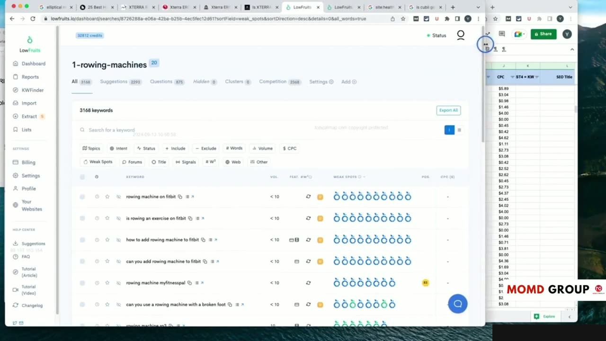
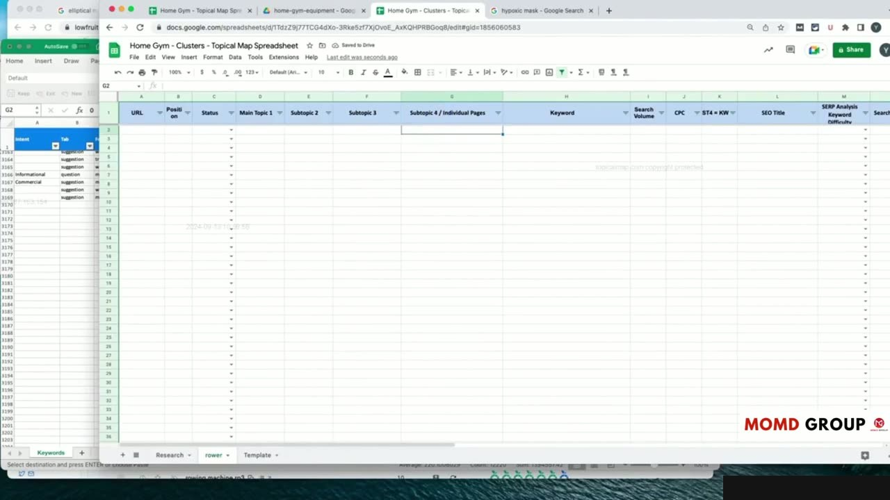
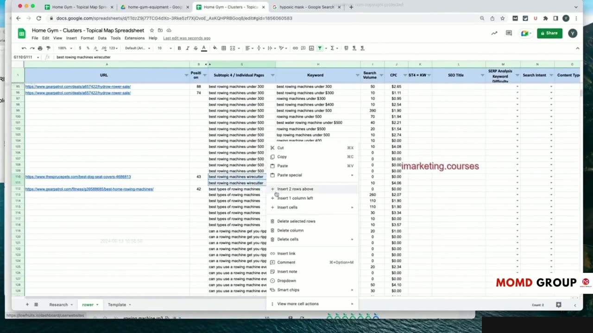

Practical Case Study: Internal Linking, Content Plan & Execution Audit
Thực thi Chiến lược Liên kết Nội bộ trong Bài viết Thực tế
Trong bài thực hành cuối cùng của Học phần 11 (video dài 22 phút), Yoyao đưa toàn bộ quy trình về đích với bước thực thi: Liên kết nội bộ, kế hoạch sản xuất và kiểm toán tổng thể.
Yoyao trực tiếp viết và chèn liên kết trong bài viết mẫu:
- Cách đặt liên kết ngược lên bài viết trụ cột (Pillar) ngay trong những đoạn văn mở đầu để truyền sức mạnh chuyên môn.
- Cách đặt liên kết ngang sang các bài viết liên quan trong cùng cụm chủ đề để giữ chân người đọc tiếp tục khám phá.
- Kỹ thuật chèn liên kết theo ngữ cảnh tự nhiên (Contextual Internal Links), tuyệt đối không gượng ép.
Đây là minh họa thực tế rõ ràng nhất cho thấy liên kết nội bộ tạo nên sức mạnh tổng hợp vượt trội như thế nào.

Vận hành Bảng Kế hoạch Sản xuất Nội dung (Content Pipeline)
Yoyao chia sẻ quy trình quản lý đội ngũ sáng tạo nội dung hiệu quả:
- Sử dụng bảng tính làm trung tâm điều phối giữa người quản lý SEO, người viết bài và người kiểm duyệt.
- Gắn nhãn trạng thái rõ ràng cho từng bài viết: Đang nghiên cứu, Đang viết, Đang duyệt, Đã xuất bản.
- Theo dõi tiến độ hoàn thành theo từng Silo để đảm bảo các bài viết trong một cụm được xuất bản đồng đều, giúp Google nhanh chóng nhận diện cụm chủ đề hoàn chỉnh.
Một quy trình vận hành khoa học giúp duy trì nhịp độ xuất bản ổn định mà không bị gián đoạn hay quá tải.

Kiểm toán Toàn diện Website sau khi Hoàn thành Dự án
Sau khi đã xuất bản các bài viết then chốt, Yoyao tiến hành kiểm toán tổng kết:
Sử dụng các công cụ quét website để kiểm tra mật độ liên kết nội bộ, tỷ lệ phân bổ Anchor Text và đảm bảo không có bài viết nào bị cô lập thiếu liên kết.
Kiểm tra tốc độ tải trang, trải nghiệm trên thiết bị di động và tính hiển thị chuẩn xác của các hình ảnh dẫn chứng.

Tổng kết Khóa học và Lời khuyên Hành động từ Yoyao Hsueh
Khép lại Học phần 11, Yoyao dành những lời khuyên chân thành và sâu sắc cho tất cả các học viên:
"Xây dựng Topical Authority không phải là một mánh khóe qua mắt thuật toán, mà là con đường xây dựng giá trị thực sự cho người dùng và doanh nghiệp."
Đừng nản lòng khi thấy kết quả chưa đến ngay trong vài tuần đầu. Khi bạn kiên trì xây dựng đủ số lượng và chất lượng bài viết theo đúng Topical Map, Google sẽ bất ngờ nhận diện thẩm quyền của bạn và đưa toàn bộ website bứt phá ngoạn mục trên bảng xếp hạng tìm kiếm!
Đó chính là sức mạnh tối thượng của Topical Maps Unlocked 2.0.

Nguồn và đối chiếu
- Topical Maps Unlocked 2.0 · 11-From Theory to Practice Module/video 7.mp4 (Video bài học chính).
- Bản tiếng Anh không có video riêng cho bài học này; nội dung đối chiếu trực tiếp từ slide và video chính.